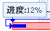

当我们创建并显示一个甘特图组件后，我们需要进行操作，比如，拖拽调节开始日期、完成日期，调节完成百分比等。
Edo.lists.Gantt其实只有一个操作事件"itemdragcomplete"，根据此事件对象action属性的不同，可以区分为是开始日期、完成百分比操作等类型。
如下代码所示：
//监听gantt的拖拽操作事件 gantt.on('itemdragcomplete', function(e){ var task = e.item; //获得操作后的值,将其覆盖掉任务原来的值,就修改了任务属性 var value = e[e.action]; //设置后,不会因为任务多次操作,而不断引发视图刷新 dataGantt.beginChange(); switch(e.action){ case 'Start': //调节开始日期 task.Start = value; break; case 'Finish': //调节完成日期 task.Finish = value; break; case 'PercentComplete': //调节完成百分比 task.PercentComplete = value; break; case 'Item': //拖拽整个ganttItem, 这里用来移动任务整个日期 value = e.Start; var time = task.Finish.getTime() - task.Start.getTime(); task.Start = e.Start; task.Finish = new Date(task.Start.getTime() + time); break; } //在最后,只进行一次视图刷新, 提升操作性能和体验 dataGantt.endChange(); });
我们通过监听Edo.lists.Gantt对象的itemdragcomplete事件，对不同的操作类型进行不同的任务属性修改处理。
下面是各种界面拖拽操作，对应的itemdragcomplete事件对象的action操作类型：
Start：
Finish：
PercentComplete：
Item：
注意，本例是简单的任务属性修改处理，只修改任务本身的属性。实际情况是，当一个任务的属性修改后，根据任务相关性和父子关系，会对其他任务造成“数据联动修改”，这就是复杂的项目管理功能逻辑了。
总之，不管是简单还是复杂处理数据修改，itemdragcomplete事件是甘特图界面操作的数据修改入口点。
以上只说明了Edo.lists.Gantt对象的事件，事实上我们必须对Edo.lists.Tree树形组件也作出事件监听，因为一个标准的甘特图，不仅仅只有条形图，还有一个任务树。
下面是Edo.lists.Tree的事件监听和处理代码：
tree.on('beforesubmitedit', function(e){ var task = this.data.getAt(e.row); //获得当前行任务对象 var column = this.columns[e.column]; //获得当前编辑的列对象 dataGantt.beginChange(); switch(column.dataIndex){ case 'Name': task.Name = e.value; break; case 'Start': task.Start = e.value; break; case 'Finish': task.Finish = e.value; break; case 'PercentComplete': task.PercentComplete = e.value; break; } dataGantt.endChange(); return false; //这一行代码很重要, 表示本次单元格编辑, 不进行默认操作 });
以上这段Edo.lists.Tree的事件处理逻辑，跟Edo.lists.Gantt是十分类似的，这里同样进行了简单的任务修改处理，也可以进行复杂的项目管理功能逻辑处理。
对任务的操作，还有很多其他逻辑，如新增、删除、修改、升级、降级等。这些操作方法，由Edo.data.DataGantt甘特图数据对象提供：
下面来一一例举这些方法如何使用：
新增任务
var p = dataGantt.findParent(task); var index = p.children.indexOf(task); dataGantt.insert(index, { UID: new Date().getTime(), Name: '<新任务>', Start: new Date(2009, 0, 28), Finish: new Date(2009, 0, 29), PercentComplete: 0 }, p);
dataGantt.remove(task);
//任意修改任务对象属性 task.Name = new Date(); task.Start = task.Start.add(Date.DAY, 1); //... dataGantt.endChange();
升级任务
dataGantt.upgrade(task); dataGantt.endChange();
dataGantt.downgrade(task); dataGantt.endChange();
移动任务
var task = gantt.getSelected(); var movetask = gantt.data.getAt(0); //移动任务:add, append, preend三种方式 gantt.data.move(movetask, task, 'add');
相关示例：事件监听和操作